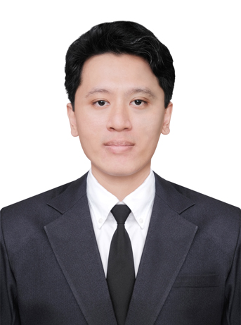

I am a motivated fresh graduate majoring in Information Technology with experience across engineering and research. I am adept at learning new tools and applying problem-solving skills in multidisciplinary environments. I'm eager to apply my skills to engineering, research, or technology-driven environments.
Jakarta Pusat, DKI Jakarta (Jan 2017 - Feb 2017)
Inspection of Nuclear Installation and Material Team - Internship
Universitas Gadjah Mada - DI Yogkayarta, Indonesia (Aug 2015 - May 2021)
Universitas Gadjah Mada - DI Yogkayarta, Indonesia (Jun 2021 - Jul 2025)
Mahidol University, Salaya, Thailand (Jan 2019)
Universitas Gadjah Mada, Yogyakarta, Indonesia (Oct 2024)
Universitas Gadjah Mada, Yogyakarta, Indonesia (2015-2020)